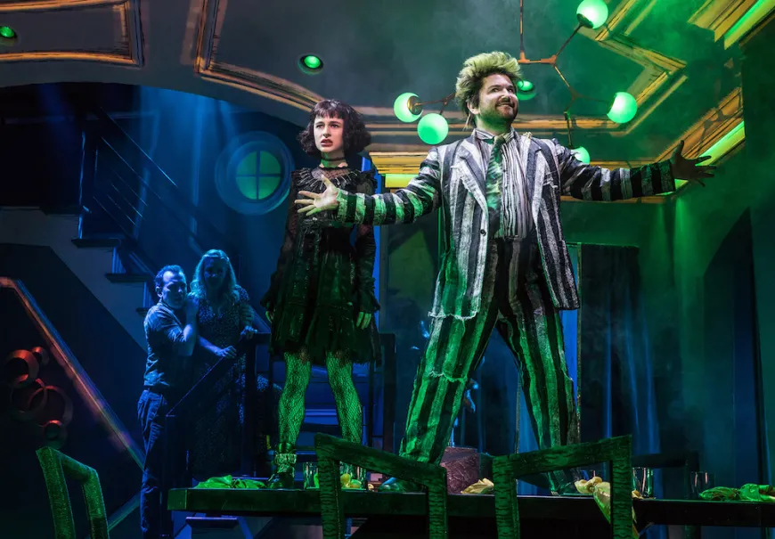

Beetlejuice the Musical Back on Broadway
Olivia Altay
November 23rd, 2025

From October 8, 2025 till January 3, 2026, Beetlejuice the Musical will be returning back to Broadway at the Palace Theatre in New York City. The show itself is 2 hours and 30 minutes long, which includes a 15 minute intermission, although the intermission felt longer. This is the third time the show has been on Broadway, but new to the Palace Theatre. According to the website Show-Score, the show has an 85% rating with over 1,000 member reviews.
Beetlejuice the Musical follows an alternative storyline of Lydia’s story. Like in the movie, the Deetz buy a house from a recently deceased family, but in the musical they play a bigger role throughout the story. Beetlejuice attempts to use Lydia so the living can see him. It’s a comedy show as Beetlejuice will have you laughing from start to finish, because of his improv and entertaining questions he asks the audience. Because of certain language and heavier topics, I would not recommend it for young children, although there were a few in the audience.
The stage has a creepy vibe as the audience waits for the show to begin. The eerie music played faintly in the background. During the show, there were numerous curtain effects, as the curtain was sometimes lifted on one side of the audience for a mini scene as the crew could set up for another major scene. A projector was also used to quick cut scenes on certain set pieces to add visual effects. Lydia’s costume that she wore for the majority of the show was dark and gloomy, filled with many ruffle details. Beetlejuice’s aged costume was detailed while still looking a thousand years old, fitting the overall story as he is not from the living.
In my opinion, the cast was brilliant, the entire show was hilarious, and the songs were entertaining. The vocals specifically showed how talented the cast is; Isabella Esler who made her Broadway debut has some of the best vocals I’ve ever heard at only 18 years old. Other major performers include Justin Collette, who plays Beetlejuice and had a very funny improv when he talked to the audience in the beginning of the show. Maxine Dean, played by Trisha Paytas, a famous youtube star, had a grasp over the audience as everyone applauded as she walked onto the stage lasting for over a minute.
Overall, the entire show was amazing. From one of the musical’s previous Broadway runs, the New York Times praised it, saying, “This show so overstuffs itself with gags, one-liners and visual diversions that you shut down from sensory overload…”
In summary, the musical is engaging and entertaining and I highly recommend it to any Tim Burton fan or anyone who loves spooky movies. The show itself had an amazing cast. Isabella Esler’s vocals and Justin Collette’s talent made the show. Make sure to catch Beetlejuice on Broadway before it closes on January 3, 2026 at the Palace Theatre steps away from Times Square.
More In News

Secrets Behind the Louvre Heist

COP30: The Globe's 30th Climate Conference

College Polls: Data and Statistics from U.S. Admissions